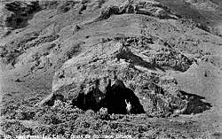

Robinson Crusoe's Cave
Useful Information
| Location: | Crown Point, Store Bay area. Robinson Crusoe Island, Juan Fernandez Archipelago. |
| Open: | All year daily. |
| Fee: | The family that live on the land in front of the cave make a small charge. |
| Classification: |
 Karst cave Karst cave
|
| Light: | none |
| Dimension: | |
| Guided tours: | no |
| Photography: | |
| Accessibility: | |
| Bibliography: |
Wendy Driver (2005):
Crusoe Was Here,
The Mail on Sunday February 6, 2005 pp 98-99 illus. Capt Joshua Slocum (1900): Sailing alone around the world, New York, Century Co. illus: Robinson Crusoe's Cave. |
| Address: | |
| As far as we know this information was accurate when it was published (see years in brackets), but may have changed since then. Please check rates and details directly with the companies in question if you need more recent info. |
|
History
In 1704 Alexander Selkirk was marooned on a deserted island in the Pacific Ocean, but was rescued 4 years later. The author Daniel Defore heard about Selkirks adventures and wrote the famous book: Robinson Crusoe. In the best traditions of colonialism, Crusoe befriended a native and made him work for him. He called him Man Friday, a term still in use today for an odd job man or women [Girl Friday].
Text by Tony Oldham (2004). With kind permission.
Description
|  |
| Image: an old postcard of Robinson Crusoe's cave. |
Just 19km long and 6km wide, it is the largest and only inhabited island in the Juan Fernandez Archipelago, a tiny out crop of rock in the middle of the Pacific Ocean.
It was here that the real Robinson Crusoe was marooned 300 years ago. Alexander Selkirk was very different from Daniel Defoe's hero, but it was his survival on this speck of land 640km off the coast of Chile that inspired Defoe to write his novel.
Legend has it that Selkirk lived in a large cave on the sea shore. This is same cave that Bernard Keiser, a middle-aged American millionaire thinks is the repository of Spanish treasure. Bernard has spent the last 6 years excavating the cave and the surrounding area looking for gold hidden by the Spanish in 1715.
Text by Tony Oldham (2004). With kind permission.
- See also
 Search Google for "Robinson Crusoe's Cave"
Search Google for "Robinson Crusoe's Cave" Google Earth Placemark
Google Earth Placemark Alexander Selkirk: part 2
by James S. Bruce and Mayme S. Bruce,
a good account of the real Robinson Crusoe.
Alexander Selkirk: part 2
by James S. Bruce and Mayme S. Bruce,
a good account of the real Robinson Crusoe.- Even Robinson Crusoe has his day
- Crusoe's Cave, near Crown Point
- Robinson Crusoe,
huge link list on all aspects of Robinson Crusoe.